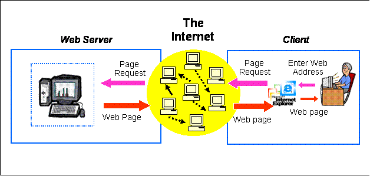
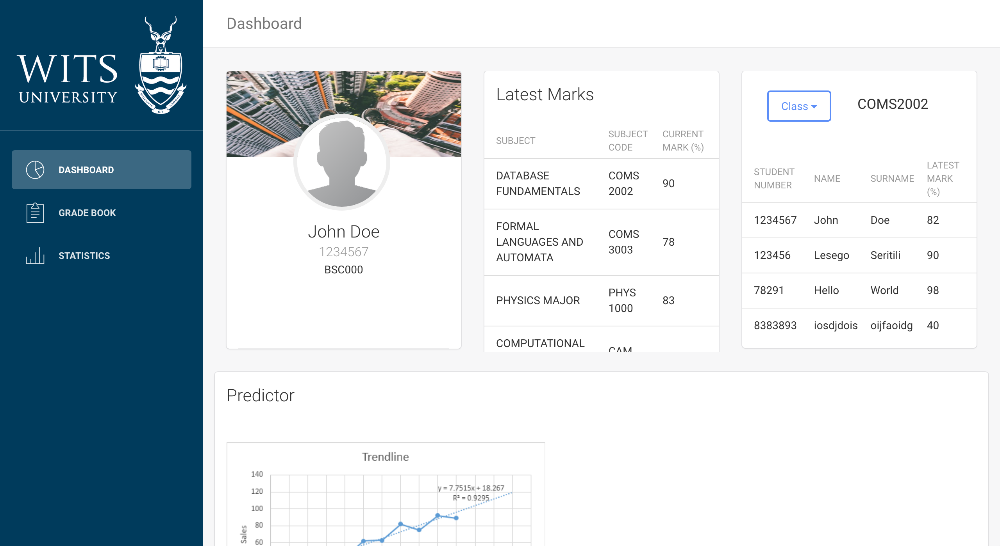
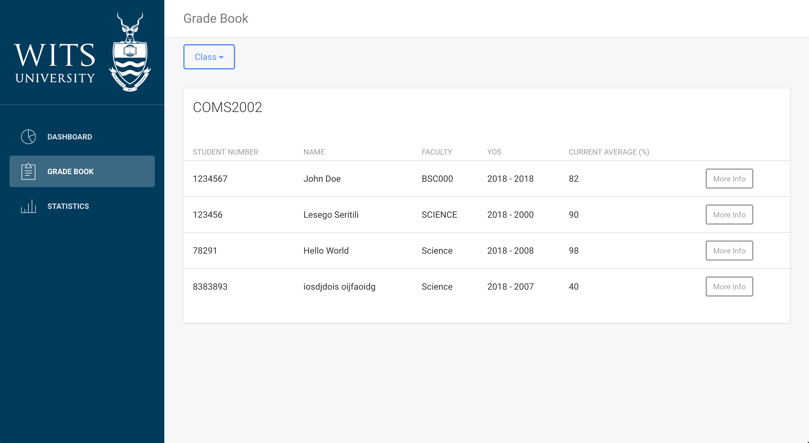
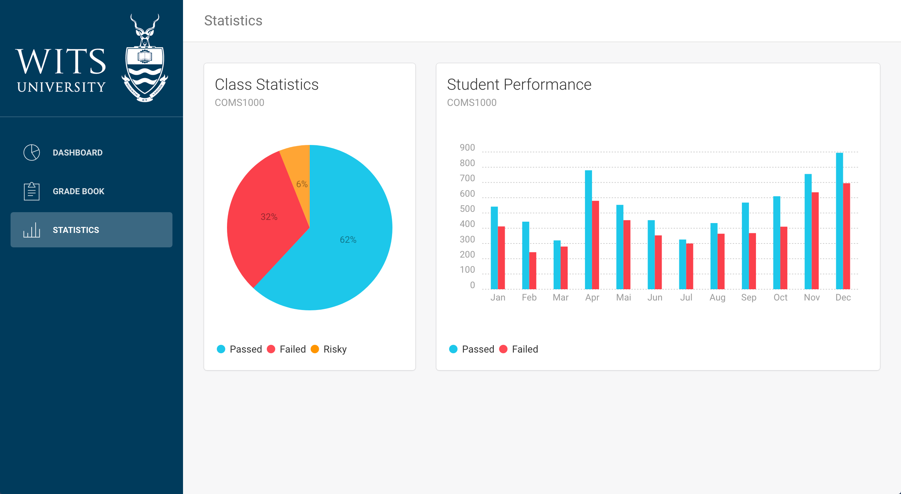

ATOM
COMS 3009 project
This is is a web based application allowing lecturers to view students in their classes, view their respective marks and run a prediction algorithm to tell whether the student is at risk of failure so that systems can be put in place to prevent said student from failing.Architecture description
 This application will follow a client-server model. The server will hold the actual website and the code that links to the machine learning algorithm and the plotting tools. When the user opens the website they will be greeted by a login screen resembling the Wits Sakai system. We will be using restful API to connect theweb browser to the server. They will need to put in their username and password (should be linked to the Wits system so as to allow lecturers to use their Sakai login details). Once successfully logged in, they will be redirected to the dashboard.  Here they will be able to select from 3 tabs on the left side menu: Dashboard, Grade Book, Statistics. On the dashboard page the user will see a block showing information about the currently selected student, then another block with their marks, then another block to allow the user to select a new student. Underneath all this will be a graph plotting the prediction for the current student.  In the Grade Book the user will be able to see the marks of students within a particular class.  Under the Statistics tab the user will see graphical representations of the classes marks that they select etc.Flow Diagram

Activity Diagram